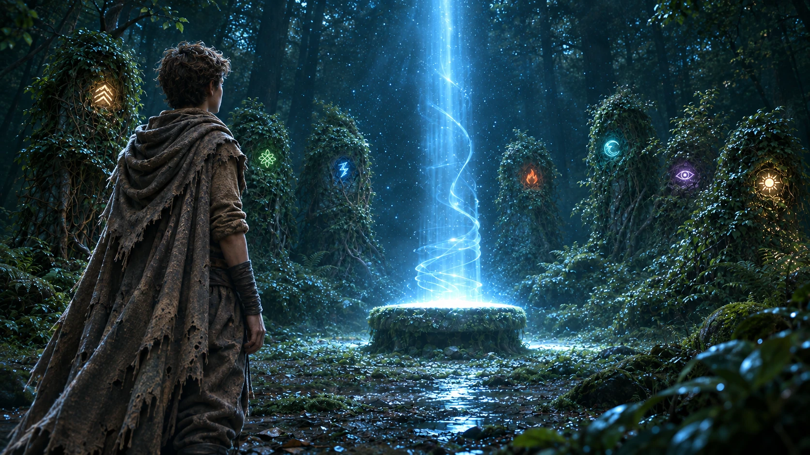

A path through a forest can do more than lead a character from one place to another. It can suggest that someone has been there before, that a place has a history, and that not everything in that history is ready to be explained. Those are the kinds of visual ideas I am exploring as Chapter 8 of The Orb, *Whispers in the Dark*, moves through editing.
This is a look at the visual development behind the chapter, not a scene-by-scene preview. The images shown here are production references and storyboard material. Editing is still underway, so details can change before the finished chapter is released.
A marker that asks a question
One reference explores stacks of rough crimson stones placed along a path. Their color makes them stand out against the forest, while their uneven shapes make them feel like part of the landscape. They are simple enough to recognize at a glance but unusual enough to raise a question: who put them there, and why?
The visual reference describes the stones as markers associated with witches. That is a useful design idea because it suggests a relationship between a person and a place without requiring an explanation on screen. A repeated shape can make the audience notice a pattern before a character understands it. The scale of the stones matters too: a marker needs to be visible in a wide environment without becoming so large that it overwhelms the scene.
Reference art can contain more information than a finished shot needs. A production sheet might explore variations, texture, scale, and a possible destination all at once. An individual frame can be much quieter. The aim is to choose the details that support the moment rather than trying to fit every idea into it.
Light as part of the landscape
Another reference shows a forest clearing centered on a column of blue light. The surrounding vegetation and stone forms give that light a setting and a sense of scale. The clearing feels distinct from the darker forest around it, but it still belongs to the same physical world: leaves, roots, damp ground, and natural irregularity keep the image grounded.
Color can help a viewer read a scene before anyone speaks. In this image, the cool central light is the first thing the eye follows. Smaller points of color around the clearing give the setting additional visual rhythm. The question for the production is how much of that detail a shot needs and how long a viewer needs to see it.
An interesting environment is not only a backdrop. Its shapes and lighting influence where a character can stand, what the audience notices, and how a moment feels. A clearing can invite exploration while still leaving enough darkness around its edges to create uncertainty.
From a place to a point of view

The storyboard image places the young Traveler in the foreground, looking toward the illuminated clearing. That change makes the environment more personal. Instead of seeing the place on its own, we see it in relation to someone encountering it.
The rear three-quarter view leaves room for the setting while giving the viewer a position from which to approach it. The Traveler’s silhouette provides scale; the light draws the eye past him. His presence also changes the emotional question from “What does this place look like?” to “What might it mean to the person standing here?”
Continuity matters across images like these. The Traveler’s age, hair, clothing, and overall silhouette need to remain recognizable even when the camera moves. The same is true of the environment: the relative position of a light source or a distinctive landmark can help separate a deliberate new angle from an accidental redesign.
A reference is a starting point
These images serve different purposes. The crimson-stone sheet explores a repeatable visual motif. The clearing image establishes an environment and atmosphere. The storyboard considers character placement and camera perspective. Looking at them together helps connect design decisions, but it does not mean every detail in a reference becomes a fixed piece of the finished film.
That distinction is especially useful during editing. A still image can hold a viewer’s attention indefinitely; a moving sequence has timing, sound, transitions, and neighboring shots to consider. The strongest composition in isolation may need adjustment to support the larger scene. Likewise, a small visual detail may become more effective when it is repeated or revealed at the right moment.
The goal is to make the world feel consistent without explaining away its mystery. A recognizable material, a recurring color, or a carefully placed mark can imply that a place has a life beyond the edge of the frame. Viewers can discover those connections at their own pace.
Chapter 8 is still taking shape
Chapter 8, *Whispers in the Dark*, is in editing. These are glimpses of the work behind it, not promises that every reference detail will appear unchanged. I am keeping the story itself for the finished chapter.
If you are new to the series, visit The Orb page to find the story and current videos. You can also read The Orb: The Story So Far for a spoiler-light introduction to the opening journey.